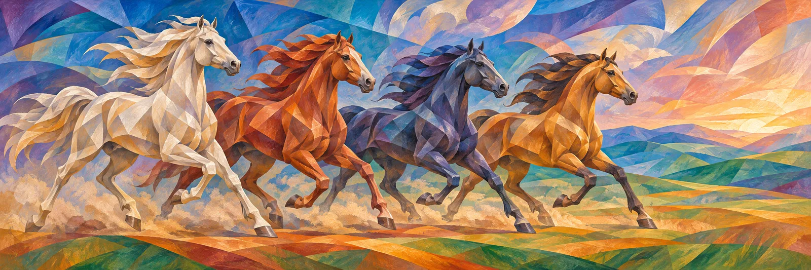

YiWord Yi = Word of Modus Operandi
The Yijing (Book of Changes) uses yin and yang lines, trigrams, and 64 hexagrams with 384 line positions to describe how to recognize situations, choose actions, and bear consequences in a changing world. This site provides original text, translation, and commentary in three languages: Traditional Chinese, Simplified Chinese, and English.
64 Hexagrams
Each hexagram represents a complete situation; each line represents a position and stage within it.
Ten Wings (易傳十翼)
Tuan, Xiang, Xici, Wenyan, Shuogua, Xugua, and Zagua — ten chapters developing Zhouyi symbols into discourse on cosmic change and human action.
Introduction
What is the Yijing? Content, formation, authors, trigrams, reading method, and modern usage boundaries.
64 Hexagrams
Browse all 64 hexagrams with original text, translations, and cards
View 64 Hexagrams →Ten Wings
Tuan, Xiang, Xici and other commentaries
Browse Ten Wings →App Store
YiWord Event Tracker for iOS
Download on App Store →Google Play
YiWord Event Tracker for Android
Download on Google Play →